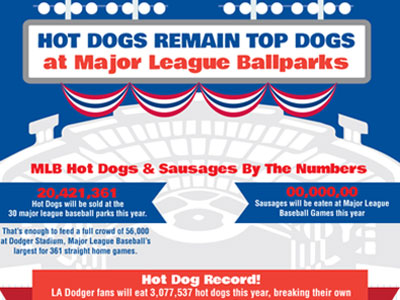

what up dude
Features Well Travelled | June 4, 2014
Music journalists Hilary and Chona headed down to Sasquatch Music Festival in George, Washington, capturing their trip for Well Travelled.
Continue ReadingTo get going, this file (index.html) includes some basic styles you can modify, play around with, or totally destroy to get going.
Once you've exhausted the fun in this document, you should check out:
Foundation Documentation
Everything you need to know about using the framework.
Foundation on Github
Latest code, issue reports, feature requests and more.
@foundationzurb
Ping us on Twitter if you have questions. If you build something with this we'd love to see it (and send you a totally boss sticker).
Features Well Travelled | June 4, 2014
Music journalists Hilary and Chona headed down to Sasquatch Music Festival in George, Washington, capturing their trip for Well Travelled.
Continue ReadingFeatures Well Travelled | June 4, 2014
Music journalists Hilary and Chona headed down to Sasquatch Music Festival in George, Washington, capturing their trip for Well Travelled.
Continue ReadingFeatures Well Travelled | June 4, 2014
Music journalists Hilary and Chona headed down to Sasquatch Music Festival in George, Washington, capturing their trip for Well Travelled.
Continue ReadingFeatures Well Travelled | June 4, 2014
Music journalists Hilary and Chona headed down to Sasquatch Music Festival in George, Washington, capturing their trip for Well Travelled.
Continue ReadingThis is a twelve column section in a row. Each of these includes a div.panel element so you can see where the columns are - it's not required at all for the grid.
Six columns
Six columns
Four columns
Four columns
Four columns
Simple Button
Radius Button
Round Button
Success Btn
Alert Btn
Secondary Btn
A whole kitchen sink of goodies comes with Foundation. Checkout the docs to see them all, along with details on making them your own.
Go to Foundation Docs

Hot Dogs Remain Top Dog For Major League Baseball Fans
Dodgers Fans Expected to Break Single Season Hot Dog Record Details.
See a video showing how hot dogs are made. There are many tall tales about the way in which hot dogs are made, but the National Hot Dog and Sausage Council is eager to tell the real story.
Find Out MoreThe National Hot Dog & Sausage Council’s complete catalogue of irresistible recipes.
Janet Riley
President, NHDSC and 'Queen of Wien'
202/587-4245, cell 703/801-2238
jriley@meatami.com
Eric Mittenthal
Vice President, Public Affairs
National Hot Dog & Sausage Council
202/587-4238, cell 404/808-8396
emittenthal@meatami.com
1150 Connecticut Avenue, NW, 12th floor
Washington, DC | 202-587-4200
Skip the Gym and Enjoy Quick Workouts with the FitStar App
Amongst a sea of uninspired fitness apps, FitStar offers an easy, fun way to work on your personal health and strength....
View Full Article6 Great Sites and Apps for Taking Fitness Classes at Home
My favorite of the pack, FitStar is a beautiful video-based fitness app for the iPhone and iPad designed by NFL pro Tony Gonzalez. Built on...
View Full Article
FitStar Partners with MyFitnessPal for Comprehensive Fitness Tracking
Fitness companies FitStar and MyFitnessPal have announced a new partnership, aimed at offering improved tracking and management of health data to mobile users. The beginning...
View Full ArticleForget The Gym, Get Fitstar Fit With Your iPad or iPhone
If you lament the cost and efforts involved in joining a gym, but still want to keep work on a fitness routine then Fitstar is...
View Full Article
Tony Gonzalez Leaves NFL and Becomes Fitness Guru
Retired NFL tight end Tony Gonzalez and FitStar CEO Mike Maser discuss their partnership....
View Full Article
The Top 5 Workout and Fitness Apps for 2014, According to You!
It’s no wonder FitStar came in as your top workout app of 2014: it’s like having a personal trainer in your pocket. The app totally...
View Full ArticleApp Learns Users’ Fitness Abilities And Creates Their Perfect Workout
The Fitstar app features a large library of short clips hosted by former NFL player Tony Gonzalez that guide users through each fitness technique....
View Full Article
Exercise Apps For Fitness Fanatics And Beginners
FitStar is a personal training app featuring retired NFL star Tony Gonzalez, who leaves tips throughout the programs. The app features personalized workout videos that...
View Full ArticleFive Pull-Ups Too Much? FitStar Knows When to Push
FitStar uses data about your body to eliminate intimidating workouts that lead to broken resolutions. The app creates customized exercise routines, presented in slick videos...
View Full Article